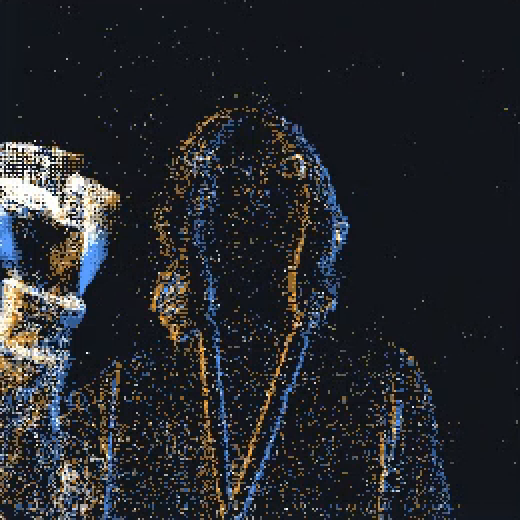

Setup
-

Gesture
A hand moves, shown here as the event camera sees it: orange for brighter, blue for darker.
-

Event camera
Each pixel reports only a change in brightness. Every 130 ms makes one frame.
-

FPGA 1 · spiking encoder
A spiking neural network in hardware turns the events into spikes. Neuromorphic and event-driven.
1.29 ms per step -

Transmitter
USRP X410. Each spike becomes one 4 µs radio pulse in its neuron's own time slot.
-
Receiver
USRP X410. Finds each window by its sync, then reads every slot by its energy.
-
FPGA 2 · spiking decoder
A second spiking neural network recognises the gesture from the spikes that arrived.
1.07 ms per step -
right hand wave
Decision
One of 11 gestures, after four frames. A still scene sends nothing.